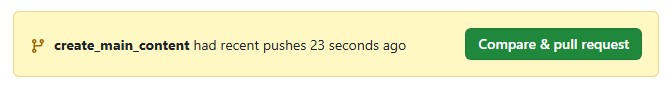
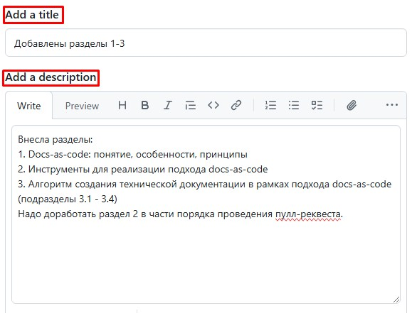

2.2. Система контроля версий и веб-сервис для работы с ней
2.2.1. Система контроля версий: понятие и примеры
Система контроля версий — это ПО, которое позволяет отслеживать и контролировать изменения в тексте, управлять различными версиями проекта, синхронизировать работу нескольких человек над одним файлом, а также автоматизировать сборку, тестирование и деплой проекта.
Примеры
- Git
- Subversion
- Mercurial
Зачастую, чтобы использовать систему контроля версий, нужен подходящий для нее веб-сервис, который обеспечивает графический интерфейс для работы с этой системой, а также облачное хранилище для использующих ее проектов.
Примеры веб-сервисов для Git
- GitHub
- GitLab
- Bitbucket
2.2.2. Используемые система контроля версий и веб-сервис для работы с ней
Техническая документация создается с использованием Git и Github.
2.2.3. Основы Git и GitHub
Git — это распределенная система контроля версий.
Работа с Git строится на следующих моментах:
-
весь проект хранится в удаленном репозитории на сервере.
Репозиторий — это совокупность файлов, находящихся под контролем версий, с историей их изменений и служебной информацией; -
технические писатели работают с локальными копиями репозитория и отправляют внесенные изменения на сервер, чтобы обновить оригинал проекта;
-
основная версия документа хранится на главной ветке репозитория. При работе с какой-то частью документа (создании нового раздела) технический писатель не использует главную ветку, а создает новую отдельную ветку. В ней сохраняются в хронологической последовательности все внесенные им изменения. После того, как работа полностью окончена, ветка технического писателя сливается с главной веткой. Следовательно, основная версия документа обновляется, в нее вносятся коррективы технического писателя;
-
чтобы изменения проекта зафиксировались в ветке, их надо добавить в индекс Git, а затем закоммитить.
Индекс Git — это промежуточная область, в которой хранятся изменения файлов на пути от локальной копии до оригинального репозитория.
Коммит (от англ. commit — «фиксировать») — это событие в истории ветки, которое выполняется по спецкоманде и фиксирует произошедшие в ветке правки, которые были добавлены в индекс Git; -
чтобы локальные изменения отправились на удаленный репозиторий, их надо запушить.
Пуш (от англ. push — «толкать») — это процесс, в ходе которого содержимое локальной копии загружается в репозиторий; -
чтобы слить ветку технического писателя с главной веткой репозитория, надо сделать пулл-реквест.
Пулл-реквест (от англ. pull-request — «запрос на включение») — это запрос на слияние веток, в ходе которого проверяется нет ли противоречий между ними. Если конфликтов нет, ветка технического писателя вольется в главную ветку репозитория. Если конфликты есть — слияние веток возможно только после разрешения конфликтов.
GitHub — это веб-сервис для хостинга Git-репозиториев, статических сайтов GitHub Pages и автоматизации сборки GitHub Actions.
GitHub Pages — это часть веб-сервиса GitHub, которая предусмотрена для бесплатного размещения статических сайтов в интернете.
GitHub Actions — это часть веб-сервиса GitHub, которая позволяет автоматизировать конвейер сборки, тестирования и развертывания.
2.2.4. Взаимодействие с Git
| Процесс | Назначение команды | Команда |
|---|---|---|
| Просмотр статуса файлов в локальной копии репозитория | git status |
|
| Обновление локальной копии репозитория | git pull |
|
| Перенос изменений из локальной копии в репозиторий | Добавить изменения в индекс Git | git add . |
| Закоммитить изменения | git commit -m "суть изменений" |
|
| Запушить изменения | git pushили git push -u origin название_ветки — если это первый пуш новой ветки |
|
| Создание новой ветки и взаимодействие с ней | Создать новую ветку | git branch название_ветки |
| Переключиться на ветку | git switch название_ветки |
|
| Создать новую ветку и переключиться на нее | git checkout -b название_ветки |
|
2.2.5. Оформление веток и коммитов
- Для наименования ветки используйте латиницу, цифры и нижнее подчеркивание.
-
Название ветки должно отражать суть производимой в ней работы и начинаться со слов:
create- cоздание документа;add- добавление разделов в уже существующий документ;fix- исправление ошибок;edit- редактирование структуры документа;style- внесение изменений, касающихся стилизации и форматирования.
-
Сообщение коммита пишите на русском языке.
- Сообщение коммита должно отражать суть вносимых изменений и начинаться на причастие.
2.2.6. Пулл-реквест и слияние веток
Чтобы сделать пулл-реквест:
1) Откройте репозиторий в GitHub;
2) Нажмите Compare & pull request:

3) Проверьте, чтобы в разделе сравнения изменений в поле base была указана главная ветка main, а в поле compare — ветка, которую надо слить с главной;
4) Добавьте заголовок пулл-реквеста и его описание. Заголовок должен кратко отражать суть изменений, а описание — содержать более детальную информацию о вносимых коррективах:

5) Нажмите Create pull request.
Система проверит ветки на наличие конфликтов, и, если их нет, позволит слить ветки.
6) Чтобы слить ветки, нажмите Merge pull request и Confirm merge.
Если документ создается в команде - после создания пулл-реквеста отправьте изменения на ревью
Чтобы привлечь к ревью рецензента, в правой панели нажмите ⚙️ и выберите ответственного.
Рецензент проверит выполнение задачи и при необходимости оставит замечания в виде комментариев.
Если такие комментарии есть, внесите соответствующие правки или оспорьте замечания, ответив на комментарии.
После окончательного согласования правок, ответственный примет пулл-реквест и ветка технического писателя вольется в главную.